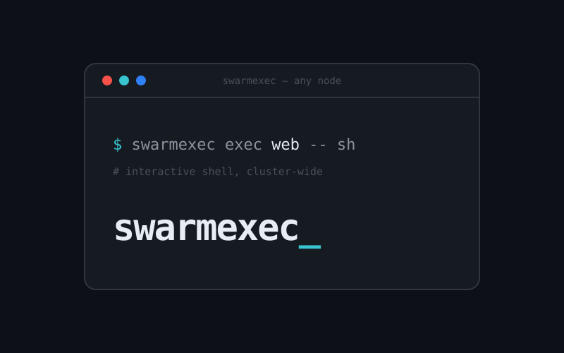
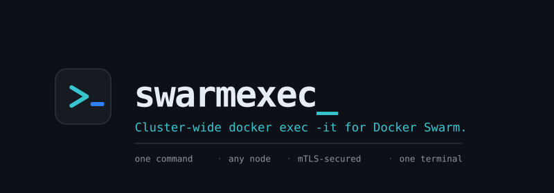
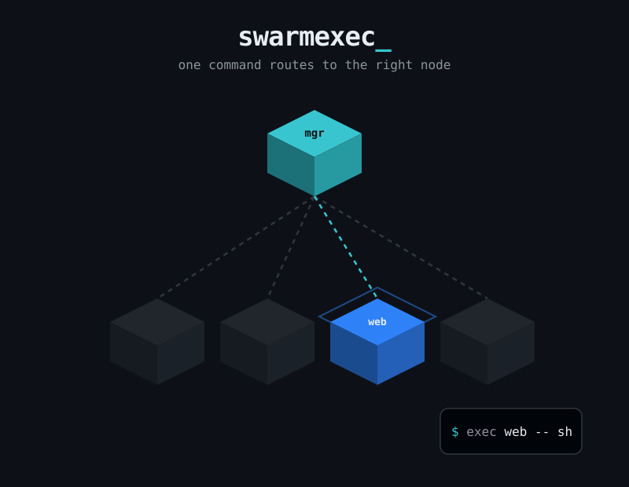
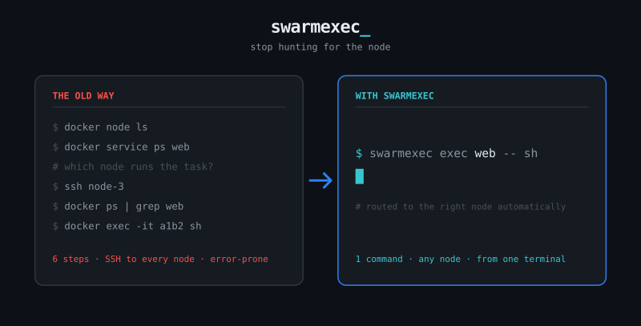
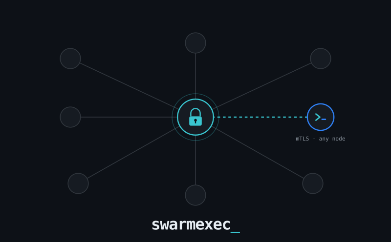
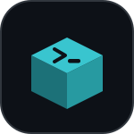
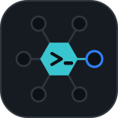

swarmexec_ image proposals
Five distinct hero/brand concepts. Review candidates — not wired into the live site.

01 · Terminal-prompt logo mark
Terminal window framing the exec command over the wordmark with a blinking aqua cursor.

02 · Wordmark lockup
Prompt-glyph badge + large wordmark, tagline and feature chips — a clean horizontal logo.

03 · Isometric swarm scene
Manager cube routing along a live link to one highlighted worker node — one command, any node.

04 · Before / after motif
Six-step SSH-and-hunt workflow versus a single swarmexec command, side by side.

05 · Secure network routing hero
mTLS hub radiating to swarm nodes with one active encrypted link to the target — abstract hero.
Icon / favicon marks _ 150×150
Square brand marks for favicon / app-icon / Docker Hub avatar use.
06 Prompt glyph >_
07 "se" monogram + cursor

08 Isometric exec node
09 Hex swarm cluster
10 mTLS lock + exec